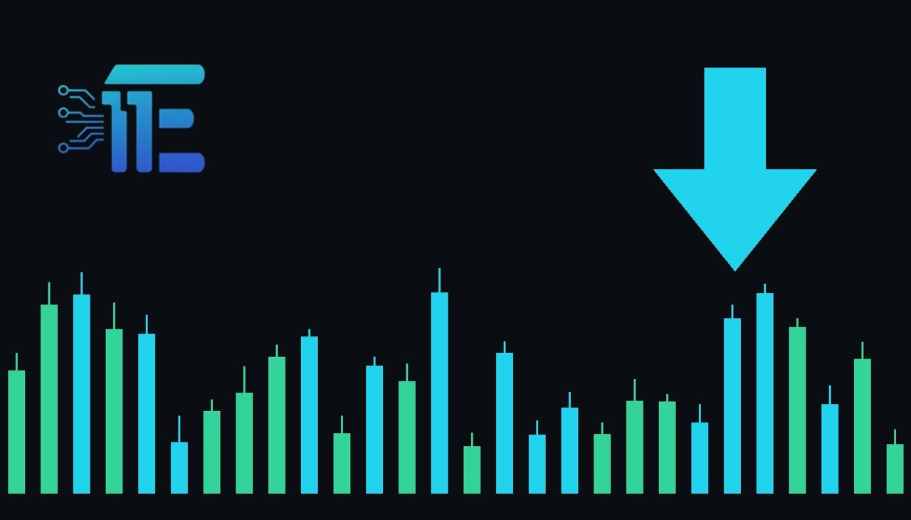

Gold Slips Near $4,010 Ahead of Fed Decisionតម្លៃមាសធ្លាក់ចុះមកត្រឹមប្រហែល 4010 ដុល្លារអាមេរិក មុនពេលការសម្រេចចិត្តរបស់ Fed
XAU/USD impact: ▼ Bearishផលប៉ះពាល់លើ XAU/USD: ▼ ធ្លាក់

Gold prices edged lower as investors awaited the Federal Reserve's policy decision this week. Diplomatic efforts regarding the U.S.-Iran conflict offered some relief to energy markets while inflation concerns weighed on bullion.
តម្លៃមាសបានធ្លាក់ចុះបន្តិច ខណៈពេលដែលអ្នកជួញដូររង់ចាំការសម្រេចចិត្តលើគោលនយោបាយរបស់ Federal Reserve សប្តាហ៍នេះ។ កិច្ចខិតខំប្រឹងប្រែងផ្នែកការទូតលើជម្លោះរវាងសហរដ្ឋអាមេរិក និងអ៊ីរ៉ង់ បានជួយសម្រាលទីផ្សារថាមពល ខណៈដែលបញ្ហាអតិផរណាបន្តប៉ះពាល់ដល់មាស។
Gold prices edged lower on Tuesday, trading near $4,010 as investors awaited the Federal Reserve's policy decision this week. At the same time, ongoing inflation concerns continued to weigh on the precious metal.
តម្លៃមាសបានធ្លាក់ចុះបន្តិចកាលពីថ្ងៃអង្គារ ដោយជួញដូរជុំវិញកម្រិត 4010 ដុល្លារអាមេរិក ខណៈដែលអ្នកវិនិយោគកំពុងរង់ចាំការសម្រេចចិត្តលើគោលនយោបាយរបស់ធនាគារកណ្តាល Federal Reserve ក្នុងសប្តាហ៍នេះ។ ទន្ទឹមនឹងនេះ បញ្ហាអតិផរណាបន្តដាក់សម្ពាធលើទីផ្សារមាសផងដែរ។
On the geopolitical front, diplomatic efforts to ease the U.S.-Iran conflict provided some relief to energy markets. Easing tensions in the Middle East tend to reduce safe-haven demand for gold, as the risk of broader oil and energy shocks diminishes.
ទាក់ទងនឹងបញ្ហាភូមិសាស្ត្រនយោបាយ កិច្ចខិតខំប្រឹងប្រែងផ្នែកការទូតដើម្បីបន្ធូរបន្ថយជម្លោះរវាងសហរដ្ឋអាមេរិក និងអ៊ីរ៉ង់ បានផ្តល់ភាពធូរស្រាលខ្លះដល់ទីផ្សារថាមពល។ ការបន្ធូរបន្ថយភាពតានតឹងនៅមជ្ឈិមបូព៌ាមាននិន្នាការកាត់បន្ថយតម្រូវការទីផ្សារមានសុវត្ថិភាពសម្រាប់មាស ដោយសារហានិភ័យនៃការឡើងថ្លៃប្រេង និងថាមពលមានការថយចុះ។
A balanced view of the market shows that gold could find support if unexpected economic data or policy shifts alter the interest rate outlook or heighten safe-haven demand once again. Conversely, persistent inflation pressures and any hawkish signals from the central bank would likely place further downward pressure on bullion.
ទស្សនៈមានតុល្យភាពនៃទីផ្សារបង្ហាញថា មាសអាចទទួលបានការគាំទ្រប្រសិនបើទិន្នន័យសេដ្ឋកិច្ច ឬការផ្លាស់ប្តូរគោលនយោបាយដែលមិននឹកស្មានដល់ធ្វើឱ្យទស្សនវិស័យអត្រាការប្រាក់ផ្លាស់ប្តូរ ឬបង្កើនតម្រូវការទីផ្សារមានសុវត្ថិភាពជាថ្មី។ ផ្ទុយទៅវិញ សម្ពាធអតិផរណាបន្ត និងសញ្ញាណាមួយពីធនាគារកណ្តាលអាចនឹងបន្តដាក់សម្ពាធចុះក្រោមលើតម្លៃមាស។
Traders should monitor the upcoming Federal Reserve policy decision and any updates on U.S.-Iran diplomatic talks closely, as these developments will heavily influence currency movements, energy markets, and overall safe-haven sentiment.
អ្នកជួញដូរគួរតែតាមដានការសម្រេចចិត្តលើគោលនយោបាយរបស់ Federal Reserve ដែលនឹងមកដល់ ក៏ដូចជាព័ត៌មានអាប់ដេតស្តីពីកិច្ចចរចាការទូតរវាងសហរដ្ឋអាមេរិក និងអ៊ីរ៉ង់ឱ្យបានដិតដល់ ដោយសារការវិវត្តទាំងនេះនឹងមានឥទ្ធិពលខ្លាំងលើចលនារូបិយប័ណ្ណ ទីផ្សារថាមពល និងអារម្មណ៍ទូទៅនៃទីផ្សារមានសុវត្ថិភាព។
Key takeawaysចំណុចសំខាន់ៗ
- Gold prices slipped near $4,010 as investors awaited the Federal Reserve's upcoming policy decision.
- តម្លៃមាសបានធ្លាក់ចុះជិត 4010 ដុល្លារអាមេរិក ខណៈអ្នកវិនិយោគរង់ចាំការសម្រេចចិត្តរបស់ Federal Reserve។
- Diplomatic efforts to ease the U.S.-Iran conflict offered relief to energy markets and reduced safe-haven demand.
- កិច្ចខិតខំប្រឹងប្រែងផ្នែកការទូតលើជម្លោះសហរដ្ឋអាមេរិក និងអ៊ីរ៉ង់បានកាត់បន្ថយតម្រូវការទីផ្សារមានសុវត្ថិភាពសម្រាប់មាស។
- Traders are closely watching central bank announcements and geopolitical updates for further market direction.
- អ្នកជួញដូរគួរតាមដានសេចក្តីប្រកាសរបស់ធនាគារកណ្តាល និងព័ត៌មានភូមិសាស្ត្រនយោបាយយ៉ាងដិតដល់។
Original commentary by THE MARKET CODE, based on public reporting from Yahoo! Finance: GC=F News. Written with the help of AI. Educational only, not financial advice.
មតិវិភាគដើមដោយ THE MARKET CODE ផ្អែកលើការរាយការណ៍សាធារណៈពី Yahoo! Finance: GC=F News។ សរសេរដោយមានជំនួយពី AI។ មាតិកាអប់រំប៉ុណ្ណោះ មិនមែនជាដំបូន្មានហិរញ្ញវត្ថុទេ។